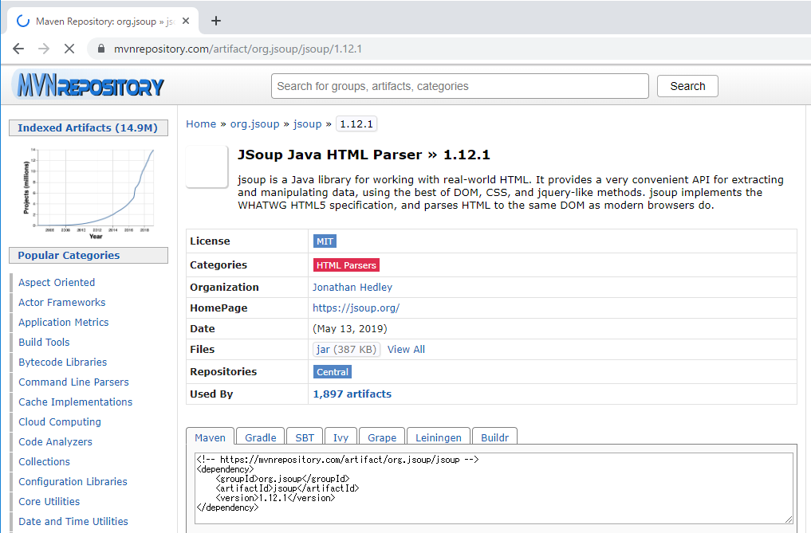
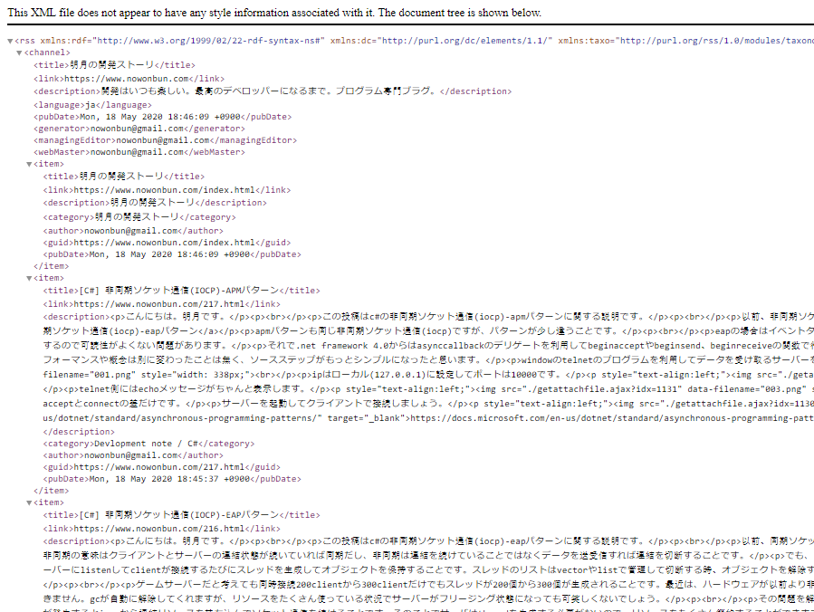
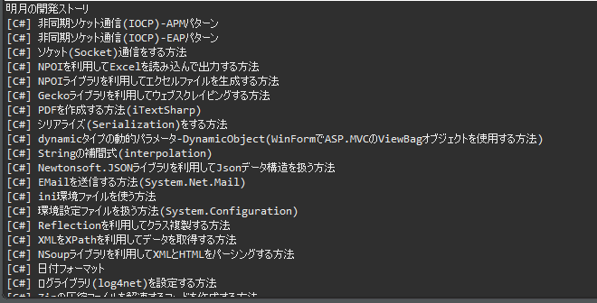
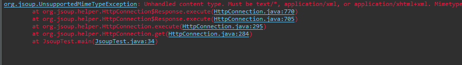
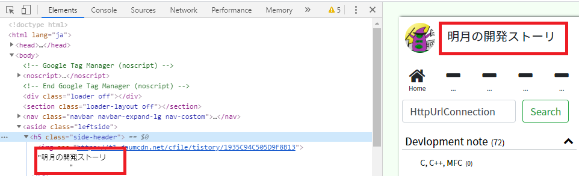
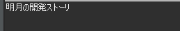

[Java] Jsoupを利用してXMLファイル(HTML)を扱う方法
こんにちは。明月です。
この投稿はJavaでJsoupを利用してXMLファイル(HTML)を扱う方法に関する説明です。
プロジェクトを作成するとXMLファイルをよく使います。特にウェブの場合は画面デザインはHTML形式で作成します。
XMLの形式はタグが開く、閉めるの構造でアトリビュートやデータになっています。XMLを探索する方法は様々の方法がありますが、最近はJqueryのsizzleエンジンでCSSSelectorでタグを探索してデータを取得する方法をよく使っています。
でもJqueryはJavaのライブラリではなく、Javascriptのライブラリです。
JavaにはJsoupというライブラリがあります。 JqueryのCSSSelectorと同じ方法で探索が可能です。
Jsoupを使うためにはmavenを利用してライブラリをダウンロードしなければならないです。
Repository - https://mvnrepository.com/artifact/org.jsoup/jsoup/1.12.1

<!-- https://mvnrepository.com/artifact/org.jsoup/jsoup -->
<dependency>
<groupId>org.jsoup</groupId>
<artifactId>jsoup</artifactId>
<version>1.12.1</version>
</dependency>
XMLを探索テストをするためにこのブログのRSSファイルを利用しましょう。

link - https://www.nowonbun.com/rss
上の例でchannel->item->title->をコンソールに出力しましょう。
import java.io.BufferedReader;
import java.io.InputStreamReader;
import java.net.HttpURLConnection;
import java.net.URL;
import org.jsoup.Connection;
import org.jsoup.Jsoup;
import org.jsoup.nodes.Document;
import org.jsoup.nodes.Element;
import org.jsoup.select.Elements;
public class JsoupTest {
// HttpURLConnectionを利用してXMLデータを取得する関数
private static String getXml() {
try {
// URL生成
URL uri = new URL("https://www.nowonbun.com/rss");
// HttpURLConnectionでサーバーに接続する。
HttpURLConnection connection = (HttpURLConnection) uri.openConnection();
// ストリームを取得する。
try (BufferedReader input = new BufferedReader(new InputStreamReader(connection.getInputStream()))) {
// バッファ
String line;
StringBuffer buffer = new StringBuffer();
while ((line = input.readLine()) != null) {
buffer.append(line);
}
// データを返却する。
return buffer.toString();
}
} catch (Throwable e) {
e.printStackTrace();
return null;
}
}
// 実行関数
public static void main(String[] args) {
try {
// Jsoupのconnectでも取得可能が、Httpヘッダのcontent typeがapplication/xmlないのでエラーが発生する。
//Connection conn = Jsoup.connect("https://www.nowonbun.com/rss");
//Document doc = conn.get();
// HttpURLConnectionを利用してXMLデータを取得する。
Document doc = Jsoup.parse(getXml());
// itemタグを探索する。
Elements eles = doc.select("item");
// サブタグでタグ名がtitleを探索する。
for (Element ele : eles) {
Elements subnode = ele.select("title");
// ノード値をコンソールに出力する。
System.out.println(subnode.text());
}
} catch (Throwable e) {
e.printStackTrace();
}
}
}

上の例はHttpURLConnectionを利用してデータを取得しました。自分のブログは普通のウェブホスティングではないので、ヘッダーが正常に表示されません。そのため、Jsoup.connectを使うとエラーが発生します。

StringデータをDocumentタイプに生成します。 select関数を使って探索を開始します。
結果はitemのtitleは各投稿のタイトルなのでコンソールに出力します。
上の例はXMLを利用しましたが、Htmlファイルも探索ができます。

ブログの名を取得しましょう。
import org.jsoup.Connection;
import org.jsoup.Jsoup;
import org.jsoup.nodes.Document;
import org.jsoup.select.Elements;
public class JsoupTest {
// 実行関数
public static void main(String[] args) {
try {
// www.nowonbun.com/1.htmlのページを取得する。
Connection conn = Jsoup.connect("https://www.nowonbun.com/1.html");
// htmlを取得してDOcumentクラスを生成する。
Document doc = conn.get();
// タグのClass名で探索する。
Elements ele = doc.select(".side-header");
// コンソールに出力する。
System.out.println(ele.text());
} catch (Throwable e) {
e.printStackTrace();
}
}
}

Htmlファイルも取得してタグのclassで探索します。
結果はブログの名がよく出力されました。
ここまでJavaでJsoupを利用してXMLファイル(HTML)を扱う方法に関する説明でした。
ご不明なところや間違いところがあればコメントしてください。
- [Java] HttpConnectionを利用してウェブページを取得する方法2020/05/20 23:53:24
- [Java] Jsoupを利用してXMLファイル(HTML)を扱う方法2020/05/19 19:32:21
- [Java] 日付フォーマット(SimpleDateFormat)を使う方法2020/03/25 00:36:53
- [Java] サーブレット(Servlet)の環境でファイルアップロード(プログレスバーでファイルアップロード状態を表示する方法)する方法2020/03/24 00:48:21
- [Java] Spring環境でファイルアップロード(プログレスバーでファイルアップロード状態を表示する方法)する方法2020/03/22 23:15:12
- [Java] FTPに接続してファイルをダウンロード、アップロードする方法(FTPClient)2020/03/20 02:44:36
- [Java] JSPのSpring環境でschedulerのcronを使う方法2020/03/18 00:24:32
- [Java] POIを利用してExcelを扱う方法2020/03/17 01:48:00
- [Java] PDFを出力する方法(itextpdf)2020/03/13 00:47:31
- [Design pattern] 1-2. ビルダーパターン(Builder pattern)2021/06/11 19:06:28
- [Design pattern] 1-1. シングルトンパターン(Singleton pattern)2021/06/09 19:40:05
- [Design Pattern] デザインパターンの紹介2021/06/08 20:42:36
- [Tools] Dbeaver(無料Sql queryブラウザツール)2021/04/28 18:26:49
- [Bootstrap] HTMLデザインのフレームワークのBootstrap紹介2020/07/30 19:06:36
- [Python] メール(smtplib)を送信する方法2020/07/27 18:38:43
- [Python] HttpConnection(requestsモジュール)でウェブサーバーで接続する方法2020/07/20 14:41:51
- [Python] Excel(openpyxl)を扱う方法2020/07/16 16:40:31
- [Python] ファイル圧縮、解凍(zipfile)する方法2020/07/14 19:14:22
- [Python] Apache cgiでPythonを使う方法2020/07/09 19:58:19
- [Python] Web serverを起動する方法(http.server)2020/07/09 00:13:13
- [Python] WebSocketを使う方法2020/07/07 17:29:18
- [Python] PythonとJavaのソケット通信する方法2020/07/03 18:35:50
- [Python] PythonとC#のソケット通信2020/07/01 19:28:22
- [Python] INI(環境設定ファイル)を扱う方法2020/06/30 18:26:01